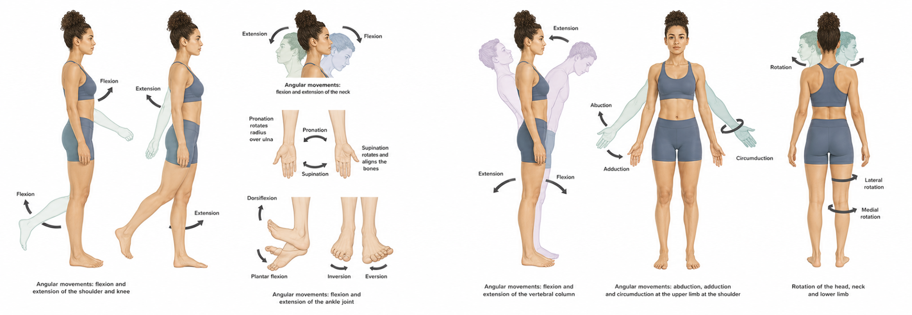
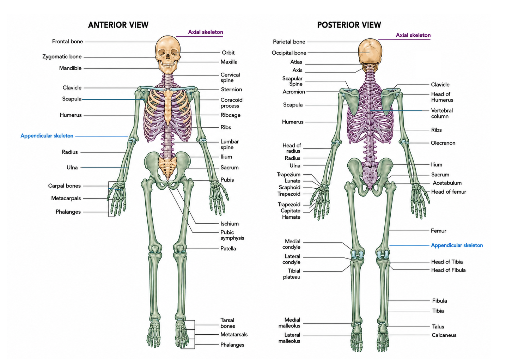
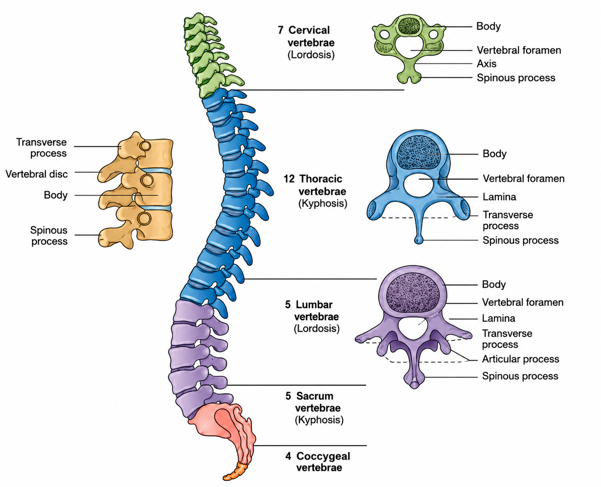
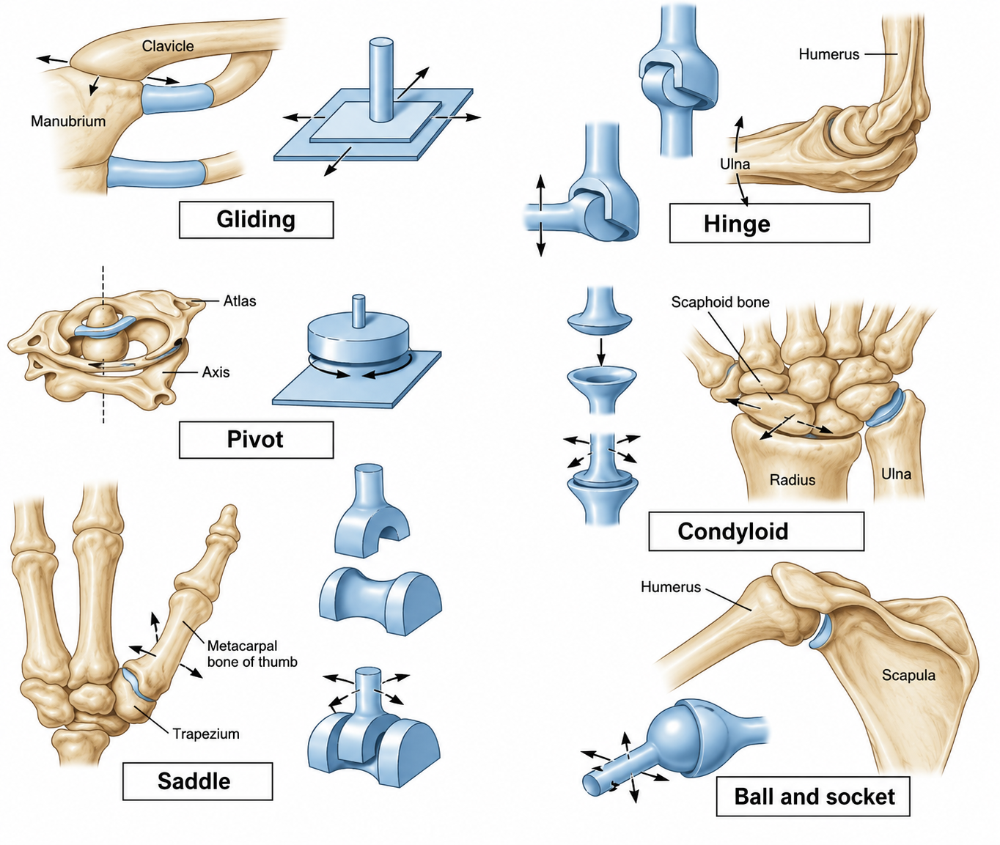

Module 01 · Lesson 01
Introduction & Skeletal System
Foundations of Human Anatomy & Physiology
Section 1: Anatomical Terminology & Planes of Movement
A common anatomical language allows coaches to communicate precisely with other health professionals (physiotherapists, sports physicians, and strength and conditioning coaches). It also helps when analysing movement and communicating observations about technique. All anatomical descriptions are made with reference to the anatomical position.
1.1 The Anatomical Position
The anatomical position is the standard reference point for all anatomical descriptions. It is achieved by:
- Standing upright with the head facing forward
- Arms hanging by the sides
- Palms of hands facing forward (anteriorly)
- Feet slightly separated with toes pointing forward
Using the anatomical position ensures that all movement descriptions are consistent and universally understood — essential when collaborating with physiotherapists and medical professionals.
1.2 Anatomical Terms of Location
| Term | Definition & Example |
|---|---|
| Anterior | The front — e.g. the chest is on the anterior surface of the body |
| Posterior | The back — e.g. the spine is on the posterior part of the trunk |
| Superior | Toward the head — e.g. the shoulder is superior to the hip |
| Inferior | Toward the feet — e.g. the knee is inferior to the hip |
| Lateral | Toward the side/outside — e.g. the little toe is on the lateral side of the foot |
| Medial | Toward the midline/inside — e.g. the big toe is medial to the little toe |
| Proximal | Nearer the trunk — e.g. the elbow is proximal to the wrist |
| Distal | Further from the trunk — e.g. the fingertips are distal to the wrist |
| Superficial | Nearer to the surface — e.g. the skin is more superficial than the muscle |
| Deep | Further from the surface — e.g. the bone is deep to the muscle |
| Prone | Face down — e.g. lying on the stomach |
| Supine | Face up — e.g. lying on the back |
1.3 The Three Planes of Movement
Movements of the human body are described in terms of the plane in which they occur. There are three planes and climbing is a multi-planar activity — coaches must understand all three:

| Plane | Description | Climbing Examples |
|---|---|---|
| Sagittal plane | Passes from front to back, dividing the body into left and right halves. Front-to-back movements. | Pull-ups, squats, deadlifts, pushing movements, walking to the crag |
| Coronal plane (also known as frontal) | Passes from side to side, dividing the body into anterior and posterior halves. Side-to-side movements. | Lateral step-through on a traverse, arm flagging to the side, lateral raises |
| Transverse plane | Passes horizontally, dividing the body into upper and lower halves. Rotational movements. | Drop-knee (hip rotation), cross through moves, trunk twisting on steep terrain |
Most climbing movements are multi-planar. A single move on an overhang might simultaneously involve sagittal plane pulling, transverse plane hip rotation, and frontal plane flagging. This complexity is what makes climbing skill so challenging to learn and coach.
1.4 Key Joint Actions for Climbing Coaches

| Joint Action | Definition | Climbing Application |
|---|---|---|
| Flexion | Decreasing the angle between two bones (bending) | Pulling into a lock-off — elbow and shoulder flexion |
| Extension | Increasing the angle between two bones (straightening) | Straightening the arm on a rest jug — elbow extension |
| Abduction | Moving a limb away from the midline of the body | Raising the leg out to the side for a high foothold |
| Adduction | Moving a limb toward the midline of the body | Drawing the leg back toward the body after a high step |
| Rotation (medial/lateral) | Turning a limb around its long axis | Hip rotation in a drop-knee; shoulder rotation on sidepulls |
| Circumduction | Circular movement combining flex, extension, abduct, adduct | Warming up the shoulder before a session |
| Pronation | Rotating the forearm so palm faces down/backward | Pulling on a jug with palm facing toward the climber |
| Supination | Rotating the forearm so palm faces up/forward | Undercling position — forearm supinated |
| Dorsiflexion | Moving top of foot toward the shin | Toe hook — ankle maximally dorsiflexed to lock onto hold |
| Plantar flexion | Moving top of foot away from the shin (pointing toes) | Toe down — getting maximal pressure onto a small hold |
| Protraction | Forward movement of the scapula (rounding shoulders) | Common postural fault in climbers from dominant pulling |
| Retraction | Backward movement of the scapula (squaring shoulders) | Scapular retraction exercises for antagonist training |
| Depression | Downward movement of the scapula | Initiating a pull-up correctly — scapular depression before elbow flexion |
| Elevation | Upward movement of the scapula (shrugging) | A common fault when fatigued — 'shrugging' into lock-off positions |
Section 2: The Musculoskeletal System
The musculoskeletal system is the combination of the muscular and skeletal systems working together. It includes the bones, muscles, tendons, and ligaments of the body, and provides shape, protection of internal organs, and the ability to move. Every time you sit, stand, walk, or climb you are using the musculoskeletal system. When it is injured or not functioning properly, our ability to complete even everyday tasks is greatly reduced — something every injured climber knows firsthand.
Coaching Insight
You don't need to memorise every anatomical term. What matters is understanding how the systems connect — so when a climber says their forearms 'pump out' on a route, you know what is happening physiologically and can adjust their training accordingly.
Section 3: The Skeletal System

The human skeleton is a collection of approximately 206 differently shaped bones that align to create a protective framework for the body that muscles can connect to and provide movement from. The skeleton serves four major functions:
- Support — provides a framework to support the organs and tissues of the body
- Protection — protects internal organs (skull protects the brain; thorax protects heart and lungs)
- Movement — provides a framework for muscles to attach to; when muscles contract they pull on bones which act like levers to create movement
- Supply & Storage — bones produce red blood cells (which transport oxygen) and white blood cells (which fight infection) in the bone marrow; they also store minerals including calcium
3.1 Bone Structure
Bone is a rigid living organ with its own nerves and blood vessels. Its construction allows it to remain lightweight yet strong. Each bone is formed from multiple layers of three types of tissue:
- Compact bone — heavy, dense, and strong; thickest at the bone's weakest point (usually the centre of the shaft); provides the primary structural strength
- Cancellous bone — has a honeycombed appearance; strong and hard without the weight of compact bone; found mainly in the ends of bones where it can absorb compressive loads
- Periosteum — the membrane of connective tissue lining the outer surface of all bones; houses nerves and blood vessels that nourish the underlying bone; acts as the attachment point for tendons and ligaments
Bone (osseous tissue) is constantly being broken down and rebuilt throughout life. This process, known as bone remodelling, allows the skeleton to adapt to mechanical loading, repair micro damage, and regulate blood calcium levels. Bone remodelling is maintained by four specialised cell types:
- Osteogenic Cells — stem-like precursors that divide to produce osteoblasts
- Osteoblasts — bone-building cells that initiate mineralisation (calcification)
- Osteocytes — mature bone cells embedded in the matrix; maintain daily bone metabolism
- Osteoclasts — resorb old bone during remodelling and fracture repair
3.2a The Axial and Appendicular Skeleton
The skeleton is divided into two main groups:
| Division | Components & Climbing Relevance |
|---|---|
| Axial skeleton | Skull, vertebral column, and bony thorax (ribs and sternum). Primary purpose: protect the central nervous system (brain and spinal cord) and vital organs. In climbing, the vertebral column must maintain stiffness and stability — particularly during overhanging climbing where spinal extension and rotation are key. |
| Appendicular skeleton | Shoulder girdle, arms, hands, pelvic girdle, legs, and feet. Primary purpose: allow movement through the joints of the arms and legs. In climbing, the shoulder girdle, upper limb, and finger bones are the most critical structures. The pelvis and lower limb drive footwork, high steps, heel hooks, and drop-knee technique. |
3.2b Types of Bone
Bones are classified by shape into five categories, each suited to specific functions:
| Term | Definition / Description |
|---|---|
| Long bones | Cylindrical shaft with expanded ends acting as levers. Examples: femur, humerus, ulna. |
| Short bones | Small, cube-shaped, high surface area for shock absorption and articulation. Examples: carpals, tarsals. |
| Flat bones | Thin and often curved; protect organs and provide large muscle attachment areas. Examples: ribs, ilium, scapula, skull. |
| Irregular bones | Complex shapes for multiple functions. Examples: vertebrae, pubis, maxilla. |
| Sesamoid bones | Embedded within tendons to protect joints and improve mechanical advantage. Example: patella. |
3.3 The Vertebral Column
The vertebral column (spine) is a key part of the axial skeleton and a common site of injury and postural issues. It is made up of 33 individual vertebrae grouped into five sections:
| Section | Number of Vertebrae & Coaching Notes |
|---|---|
| Cervical (C1–C7) | 7 vertebrae — forms the neck. C1 and C2 allow head rotation. Climbers frequently develop stiffness here from looking up repeatedly. |
| Thoracic (T1–T12) | 12 vertebrae — articulates with the rib cage. Thoracic extension and rotation are critical for efficient movement on overhangs and drop-knee technique. Loss of thoracic mobility is one of the most common postural findings in climbers. |
| Lumbar (L1–L5) | 5 vertebrae — the lower back. Must remain stable during climbing to transfer force between upper and lower body. Excessive flexion under load (rounding) is a common technical fault and injury risk. |
| Sacrum (S1–S5) | 5 fused vertebrae — connects the spine to the pelvis. Important in transmitting ground reaction forces up through the kinetic chain. |
| Coccyx | 4 fused vertebrae — the tailbone. Minimal functional role in climbing. |

3.4 Key Bones for Climbing Coaches
The following bones are of particular importance for understanding climbing movement and injury risk:
- Phalanges (finger bones) — the proximal, middle, and distal phalanges form the three segments of each finger. The flexor tendons run along the palm-side surface, held in place by annular pulleys. These are the most commonly injured structures in climbing.
- Metacarpals — the hand bones connecting the fingers to the wrist. Important in grip and load transfer.
- Carpals — eight wrist bones that allow the wrist's wide range of motion (flexion, extension, abduction, adduction, and circumduction).
- Radius and Ulna — the two forearm bones. The radius is the insertion point for the biceps brachii, making it central to elbow flexion during pulling.
- Humerus — the upper arm bone connecting the shoulder to the elbow; attachment site for the deltoid, biceps, and rotator cuff muscles.
- Scapula (shoulder blade) — a highly mobile bone providing the attachment for 17 muscles; its stability is critical for shoulder health in climbers.
- Clavicle — the collarbone; connects the scapula to the sternum and contributes to the shoulder girdle complex.
- Femur — the thigh bone; the largest bone in the body; its range of motion at the hip determines a climber's ability to high-step and drop-knee effectively.
Section 4: Connective Tissue & Joints — Types, Structure & Movement
4.1 Cartilage
Cartilage is an avascular connective tissue composed of collagen and elastic fibres within a gel-like matrix. It has three main roles: supporting soft tissues, providing smooth articulating surfaces, and enabling long-bone growth at the epiphyseal plates.
- Hyaline Cartilage — moderate collagen content. Found on articular surfaces of bones in synovial joints and on ribs attaching to the sternum.
- Elastic Cartilage — higher proportion of elastic fibres; resilient and flexible. Found in the external ear and epiglottis.
- Fibrocartilage — very dense collagen fibres; tough and resistant to compression. Found in intervertebral discs and the pubic symphysis.
4.2 Fasciae
Fasciae are sheets of fibrous connective tissue that envelop muscles and organs, providing insulation and protection from trauma. They also form conduits for nerves, blood vessels, and lymphatics. Recent research has highlighted fasciae as important sensory organs — richly innervated with proprioceptors and nociceptors — meaning that fascial health is directly relevant to movement quality and pain perception.
- Superficial Fascia — separates skin from underlying muscles.
- Deep Fascia — lines the body wall and limbs, compartmentalising muscle groups.
4.3 Tendons & Ligaments
Both tendons and ligaments are dense fibrous connective tissues, but they connect different structures and perform distinct mechanical roles:
- Tendons — attach muscle to bone. They transmit the force generated by muscle contraction to the skeleton, producing movement. The Achilles tendon, for example, connects the gastrocnemius and soleus to the calcaneus.
- Ligaments — attach bone to bone, providing static joint stability and guiding joint motion within safe ranges. Damage to ligaments (sprains) compromises joint stability.
4.4 Joints
A joint (or articulation) is the point where two or more bones meet. Joints allow movement while also needing to provide stability. Joints that prioritise stability sacrifice mobility, and those that prioritise mobility sacrifice stability. There are three main categories of joint, classified according to the degree of movement they allow:
4.4a Joint Classifications
| Joint Type | Structure | Movement & Climbing Example |
|---|---|---|
| Fibrous (Synarthrosis) | Bones joined by fibrous tissue | No movement — e.g. skull sutures. Not relevant to climbing movement but important for head protection. |
| Cartilaginous (Amphiarthrosis) | Bones joined by cartilage | Very limited movement — e.g. sternocostal joints and intervertebral discs. The discs act as shock absorbers during landing and high-impact moves. |
| Synovial (Diarthrosis) | Fluid-filled joint capsule | Greatest range of movement — e.g. shoulder, elbow, hip, knee, finger joints. The most important joint type for climbing coaches to understand. |
4.4b The Six Types of Synovial Joint
Synovial joints are the most commonly occurring joint type and produce the greatest range of movement. There are six subtypes, all present in the climbing athlete's body:

| Synovial Joint Type | Movement Allowed | Climbing Example |
|---|---|---|
| Gliding (plane) | Sliding/gliding — side to side and back and forth | Between the carpal bones of the wrist; between the tarsal bones of the ankle |
| Hinge | Flexion and extension only | Elbow (humeroulnar joint); interphalangeal finger joints; knee |
| Pivot | Rotation around a single axis | Atlas-axis joint (C1-C2) — allows head rotation; radioulnar joint — allows forearm pronation/supination |
| Condyloid (ellipsoid) | Flexion, extension, abduction, adduction, circumduction | Metacarpophalangeal joints (knuckles) — the joints between hand bones and finger bones |
| Saddle | Side to side and back and forth; no rotation | Carpometacarpal joint of the thumb — critical for pinch grip strength |
| Ball and socket | Multi-directional: flexion, extension, abduction, adduction, rotation, circumduction | Shoulder (glenohumeral) and hip — the two most mobile joints; critical for all overhead reaching and high-stepping |
4.4c Anatomy of a Synovial Joint
Understanding the internal structure of synovial joints helps coaches explain why injury occurs and what factors limit range of movement. The six key characteristics of synovial joints are:
- Articular cartilage — the smooth, white, shiny tissue covering the joint surfaces of bones; reduces friction and protects bone tissue. Cartilage has poor blood supply and heals slowly when damaged.
- Articular capsule — strong fibrous tissue surrounding the joint; adds stability and contains the joint cavity. Provides the housing for synovial fluid.
- Synovial fluid — a yellowish oily fluid that lubricates the articulating surfaces, forms a cushion between them, provides nutrients for cartilage, and absorbs debris produced by friction.
- Ligaments — strong fibrous bands connecting bone to bone; control movement and provide stability. In the fingers, the collateral ligaments prevent sideways displacement of the joint.
- Articular discs (menisci) — found in some synovial joints such as the knee; made of tough fibrous tissue to absorb shock and maintain joint stability.
- Bursae — closed sacs filled with synovial fluid found in some joints (notably the shoulder); reduce friction between tendons and bones. Bursitis — inflammation of these sacs — is a common shoulder complaint in climbers.
4.4d Factors Limiting Synovial Joint Range of Movement
Three factors determine the range of motion available at any synovial joint:
- Joint articulation — how the bones of the joint fit together. The shoulder socket is shallow (allowing high mobility but requiring muscular support); the hip socket is deep (providing stability but limiting range).
- Joint ligaments and capsule — restrict unwanted movement while allowing normal motion. Tight or shortened ligaments reduce flexibility; overstretched ligaments reduce stability and increase injury risk.
- Condition of muscles and tendons around the joint — muscles and tendons provide dynamic stabilisation and protection. The rotator cuff, for example, is the primary stabiliser of the shallow shoulder joint. When these structures are weak or have been overstretched, injury risk increases significantly. Shortened muscles and their fasciae limit ROM (Range of Motion) on the opposite side of the joint (e.g., tight hip flexors limit hip extension).
- Temperature — warm tissues are more extensible. A proper warm-up increases ROM by raising local tissue temperature.
- Injury/Inflammation — swelling, scar tissue, and pain guarding all reduce ROM around an injured joint.
- Training history — regular flexibility training (static, dynamic, PNF) can increase ROM through both neural adaptation and structural changes in connective tissue.
Key Climbing Joints
The finger PIP (Proximal Interphalangeal) and DIP (Distal Interphalangeal) joints (hinge), the shoulder glenohumeral joint (ball and socket), the elbow (hinge), and the hip joint (ball and socket) are the four highest-priority joints for climbing coaches to understand. Most climbing injuries involve one of these four joints or the connective tissue immediately surrounding them.